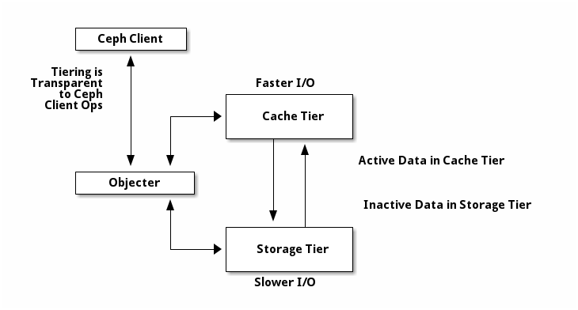

Notice
This document is for a development version of Ceph.
分级缓存
分级缓存可提升后端存储内某些（热点）数据的 I/O 性能。 分级缓存需创建一个由高速而昂贵存储设备（如 SSD ）组成的存储池、 作为缓存层，以及一个相对低速/廉价设备组成的后端存储池 （或纠删码编码的）、作为经济存储层。 Ceph 的对象处理器决定往哪里存储对象， 分级代理决定何时把缓存内的对象刷回后端存储层； 所以缓存层和后端存储层对 Ceph 客户端来说是完全透明的。

缓存层代理负责自动处理缓存层和后端存储之间的数据迁移。 然而，管理员仍可干预此迁移规则， 主要有两种场景：
writeback （回写）模式：管理员把缓存层配置为
writeback模式时， Ceph 客户端们会把数据写入缓存层、 并收到缓存层发来的 ACK ；随后， 写入缓存层的数据会被迁移到存储层、然后从缓存层刷掉。 直观地看，缓存层位于后端存储层的“前面”， 当 Ceph 客户端要读取的数据位于存储层时， 缓存层代理会把这些数据迁移到缓存层， 然后再发往 Ceph 客户端。从此， Ceph 客户端将与缓存层进行 I/O 操作， 直到数据不再被读写。 此模式对于易变数据来说较理想（如照片/视频编辑、事务数据等）。readproxy （读代理）模式：在这个模式下， 会直接用缓存层已有的对象， 可某一对象没在缓存中时，这个请求会被代理到底下一层。 这对于
writeback模式的关闭很有用， 因为它能保证在抽掉缓存层的同时还确保业务可以正常运转， 而且不会新增对象到缓存层。
其他缓存模式还有：
readonly 遇到读操作时把对象提升到缓存里； 写操作会被转发到基础层。 这个模式适合需要只读业务、而不要求系统保证强一致性的人。 （ 警告：对象在基础层更新后， Ceph 不会 尝试把相应对象的更新给同步到缓存里。 这个模式还是实验性的， 所以启用它时必须加
--yes-i-really-mean-it选项。）none 用于完全禁用缓存。
一些忠告
分级缓存会使大多数工作载荷的性能下降。 用户使用此功能时应该格外小心。
与业务载荷相关：缓存是否能提升性能与业务载荷息息相关。 因为把对象迁入或迁出缓存是有代价的，所以， 当数据集的访问模式有明显倾斜时缓存才能高效地运行， 比如大多数请求只接触少数对象时。 缓存存储池应该足够大， 可以容纳业务载荷的常用部分，以避免抖动。
难以评估：用户做过的大多数性能评估都表明， 使用分级缓存时性能非常差， 部分原因是很少有用户会让请求偏向于一小部分对象， 所以缓存需要很长时间来“预热”， 而预热的代价又很高。
通常更慢：对于不适合用分级缓存的业务载荷， 启用分级缓存后性能反而比没缓存的常规 RADOS 存储池更慢。
librados 对象枚举： librados 级的对象枚举 API 不是为这种场景设计的。 如果你的应用程序直接使用 librados 、并需要枚举对象， 分级缓存可能不会按预期方式运行。 （ RGW 、 RBD 、 CephFS 没有这样的问题。）
复杂性：启用分级缓存意味着 RADOS 集群要引入很多额外机制和复杂性。 这样就增加了遇到系统缺陷的可能性， 而其他用户未必会遇到这个缺陷， 如此一来你的系统风险更高。
已知适用的场景
RGW 时域分布（ time-skewed ）： 如果 RGW 业务载荷契合这样的场景就能良好地运行： 所有读操作都指向近期写入的对象们， 配置的分级缓存按配置的时间间隔、定期地把近期写入的对象从缓存迁入底层。
已知不适用的场景
下面是已知的与分级缓存不和睦的配置。
底层为纠删码、缓存为多副本存储池的 RBD 业务： 这是常见需求，但是一般不能很好地运行。 即使是分布良好的业务载荷， 仍然会向冷对象发送很小的写请求， 然而纠删码存储池还不支持小的写入， 就算是一个很小的写入（通常是 4 KB ）也得把整个对象（通常为 4 MB 大）迁入缓存。 只有少数用户成功实施了这样的配置，也只有他们能用， 因为他们的数据极其冷门（备份）、而且不可能对性能敏感。
底层和缓存均为多副本存储池的 RBD 业务： RBD 的底层为多副本存储池时比纠删码好一些， 但是仍然高度依赖于业务载荷中的数量分布， 且难于验证。用户需要精通自己的业务载荷， 还得谨慎地调整分级缓存配置参数。
配置存储池
要设置缓存层，你必须有两个存储池。一个作为后端存储、 另一个作为缓存。
配置后端存储池
设置后端存储池通常会遇到两种场景：
标准存储： 此时，Ceph存储集群内的存储池保存了一对象的多个副本；
纠删存储池： 此时，存储池用纠删码高效地存储数据， 性能稍有损失。
在标准存储场景中，你可以用 CRUSH 规则来标识失败域 （如 osd 、主机、机箱、机架、排等）。 当规则所涉及的所有驱动器规格、速度（转速和吞吐量）和类型相同时， OSD 守护进程运行得最优。 创建规则集的详情见 CRUSH 图。 创建好规则后，再创建后端存储池。
在纠删码编码情景中，创建存储池时指定好参数就会自动生成合适的规则集， 详情见创建存储池。
在后续例子中，我们把 cold-storage 当作后端存储池。
配置缓存池
缓存存储池的设置步骤大致与标准存储情景相同，但仍有不同： 缓存层所用的驱动器通常都是高性能的、且安装在专用服务器上、 有自己的 CRUSH 规则。 制定这样的规则时，要考虑到装有高性能驱动器的主机、 并忽略没有的主机。 详情见 CRUSH 设备类 。
在后续例子中， hot-storage 作为缓存存储池、
cold-storage 作为后端存储池。
关于缓存层的配置及其默认值的详细解释请参考存储池——调整存储池。
创建缓存层
设置一缓存层需把缓存存储池挂接到后端存储池上：
ceph osd tier add {storagepool} {cachepool}
例如：
ceph osd tier add cold-storage hot-storage
用下列命令设置缓存模式：
ceph osd tier cache-mode {cachepool} {cache-mode}
例如：
ceph osd tier cache-mode hot-storage writeback
缓存层盖在后端存储层之上，所以要多一步： 必须把所有客户端流量从存储池迁移到缓存存储池。 用此命令把客户端流量指向缓存存储池：
ceph osd tier set-overlay {storagepool} {cachepool}
例如：
ceph osd tier set-overlay cold-storage hot-storage
配置缓存层
缓存层支持几个配置选项， 可按下列语法配置：
ceph osd pool set {cachepool} {key} {value}
详情见存储池——调整存储池。
目标尺寸和类型
生产环境下，缓存层的 hit_set_type 用 Bloom 过滤器：
ceph osd pool set {cachepool} hit_set_type bloom
例如：
ceph osd pool set hot-storage hit_set_type bloom
hit_set_count 和 hit_set_period 选项定义了要保留多少个这样的 HitSet ，
以及各 HitSet 覆盖的时间区间。
ceph osd pool set {cachepool} hit_set_count 12
ceph osd pool set {cachepool} hit_set_period 14400
ceph osd pool set {cachepool} target_max_bytes 1000000000000
Note
hit_set_count 设置得越大，
ceph-osd 消耗的 RAM 越多。
保留一段时间以来的访问记录， 这样 Ceph 就能判断一客户端在一段时间内访问了某对象一次、 还是多次（存活期与热度）。
min_read_recency_for_promote 定义了在处理一个对象的读操作时检查多少个 HitSet ，
检查结果将用于决定是否异步地提升对象。
它的取值应该在 0 和 hit_set_count 之间，如果设置为 0 ，
对象会一直被提升；如果设置为 1 ，就只检查当前 HitSet ，
如果此对象在当前 HitSet 里就提升它，否则就不提升；设置为其它值时，
就要挨个检查此数量的历史 HitSet ，如果此对象出现在
min_read_recency_for_promote 个 HitSet 里的任意一个，那就提升它。
还有一个相似的参数用于配置写操作，
它是 min_write_recency_for_promote 。
ceph osd pool set {cachepool} min_read_recency_for_promote 2
ceph osd pool set {cachepool} min_write_recency_for_promote 2
Note
统计时间越长，
min_read_recency_for_promote 和 min_write_recency_for_promote 的值越高，
ceph-osd 进程消耗的内存就越多，
特别是代理正忙着刷回或赶出对象时，
此时所有 hit_set_count 个 HitSet 都载入了内存。
缓存空间消长
缓存分层代理有两个主要功能：
刷回： 代理找出修改过（或脏）的对象、 并把它们转发给存储池做长期存储。
赶出： 代理找出未修改（或干净）的对象、 并把最近未用过的赶出缓存。
绝对空间消长
缓存分层代理可根据总字节数或对象数量来刷回或赶出对象， 用下列命令可指定最大字节数：
ceph osd pool set {cachepool} target_max_bytes {#bytes}
例如，用下列命令配置在达到 1TB 时刷回或赶出：
ceph osd pool set hot-storage target_max_bytes 1000000000000
用下列命令指定缓存对象的最大数量：
ceph osd pool set {cachepool} target_max_objects {#objects}
例如，用下列命令配置对象数量达到 1M 时开始刷回或赶出：
ceph osd pool set hot-storage target_max_objects 1000000
Note
Ceph 不能自动确定缓存池的大小，所以这里必须配置绝对尺寸， 否则刷回、或赶出就不会生效。如果两个都配置了， 缓存分层代理会按先达到的阀值执行刷回或赶出。
Note
只有在达到 target_max_bytes 或 target_max_objects 阀值时，
所有客户端的请求才会被阻塞。
相对空间消长
缓存分层代理可根据缓存存储池相对大小（绝对空间消长里由
target_max_bytes 和 target_max_objects 确定的）刷回或赶出对象。
当缓存池包含的已修改（或脏）对象达到一定比例时，
缓存分层代理就把它们刷回到存储池。用下列命令设置 cache_target_dirty_ratio ：
ceph osd pool set {cachepool} cache_target_dirty_ratio {0.0..1.0}
例如，设置为 0.4 时，脏对象达到缓存池容量的 40% 就开始刷回：
ceph osd pool set hot-storage cache_target_dirty_ratio 0.4
当脏对象达到其容量的一定比例时，要更快地刷回脏对象。用下列命令设置 cache_target_dirty_high_ratio:
ceph osd pool set {cachepool} cache_target_dirty_high_ratio {0.0..1.0}
例如，设置为 0.6 表示：脏对象达到缓存存储池容量的 60% 时，
将开始更激进地刷回脏对象。显然，
其值最好在 dirty_ratio 和 full_ratio 之间：
ceph osd pool set hot-storage cache_target_dirty_high_ratio 0.6
当缓存池利用率达到总容量的一定比例时，
缓存分层代理会赶出部分对象以维持空闲空间。
执行此命令设置 cache_target_full_ratio ：
ceph osd pool set {cachepool} cache_target_full_ratio {0.0..1.0}
例如，设置为 0.8 时，
干净对象占到总容量的 80% 就开始赶出缓存池：
ceph osd pool set hot-storage cache_target_full_ratio 0.8
缓存时长
你可以规定缓存层代理必须延迟多久才能把某个已修改（脏）对象刷回后端存储池：
ceph osd pool set {cachepool} cache_min_flush_age {#seconds}
例如，让已修改（或脏）对象需至少延迟 10 分钟才能刷回， 执行此命令：
ceph osd pool set hot-storage cache_min_flush_age 600
你可以指定某对象在缓存层至少放置多长时间才能被赶出：
ceph osd pool {cache-tier} cache_min_evict_age {#seconds}
例如，要规定 30 分钟后才赶出对象，执行此命令：
ceph osd pool set hot-storage cache_min_evict_age 1800
拆除缓存层
回写缓存和只读缓存的去除过程不太一样。
拆除只读缓存
只读缓存不含变更数据，所以禁用它不会导致任何近期更改的数据丢失。
把缓存模式改为
none即可禁用。ceph osd tier cache-mode {cachepool} none
例如：
ceph osd tier cache-mode hot-storage none
去除后端存储池的缓存池。
ceph osd tier remove {storagepool} {cachepool}
例如：
ceph osd tier remove cold-storage hot-storage
拆除回写缓存
回写缓存可能含有更改过的数据， 所以在禁用并去除前， 必须采取些手段以免丢失缓存内近期更改的对象。
把缓存模式改为
proxy，这样新的和更改过的对象将直接刷回到后端存储池。ceph osd tier cache-mode {cachepool} proxy
例如：
ceph osd tier cache-mode hot-storage proxy
确保缓存池已刷回，可能要等数分钟：
rados -p {cachepool} ls
如果缓存池还有对象，你可以手动刷回，例如：
rados -p {cachepool} cache-flush-evict-all
去除此盖子，这样客户端就不会被指到缓存了。
ceph osd tier remove-overlay {storagetier}
例如：
ceph osd tier remove-overlay cold-storage
最后，从后端存储池剥离缓存层存储池。
ceph osd tier remove {storagepool} {cachepool}
例如：
ceph osd tier remove cold-storage hot-storage
Brought to you by the Ceph Foundation
The Ceph Documentation is a community resource funded and hosted by the non-profit Ceph Foundation. If you would like to support this and our other efforts, please consider joining now.